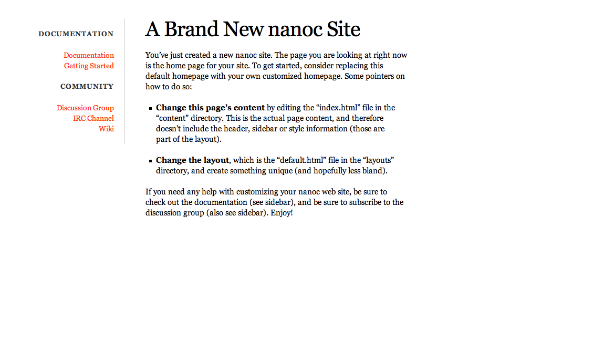
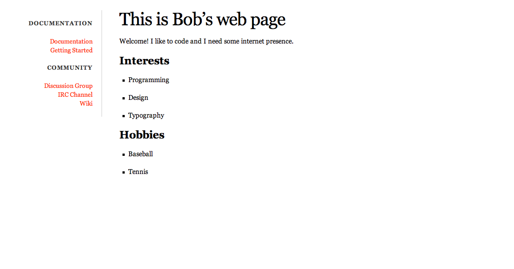
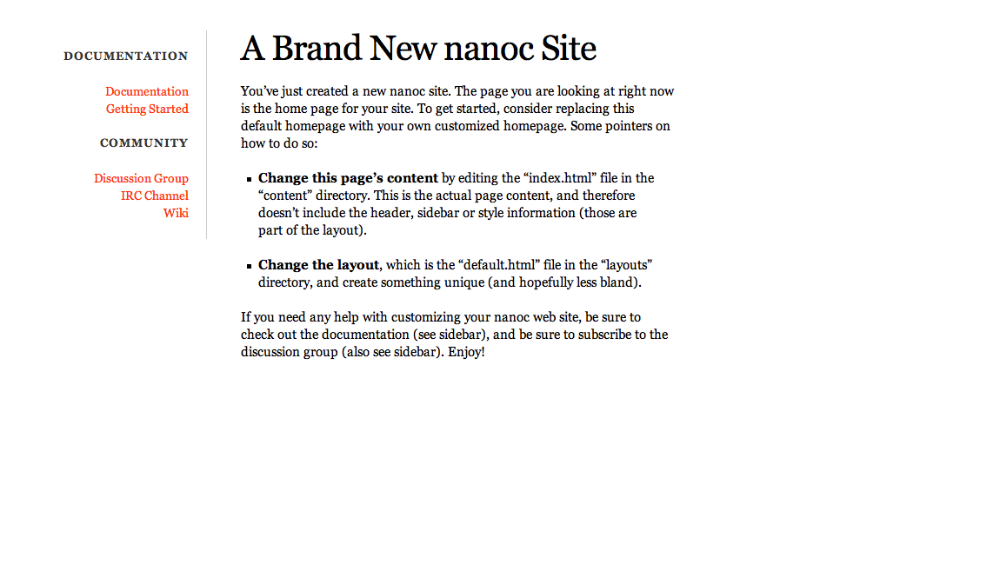
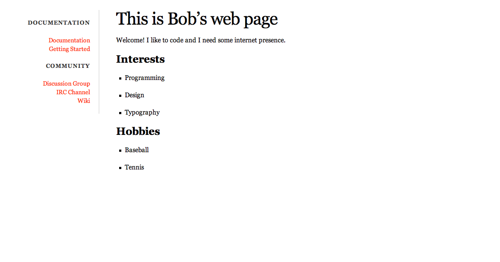

感謝您對「自由軟體鑄造場」的支持與愛護，十多年來「自由軟體鑄造場」受中央研究院支持，並在資訊科學研究所以及資訊科技創新研究中心執行，現已完成階段性的任務。 本網站預計持續維運至 2021年底，網站內容基本上不會再更動。
也紀念我們永遠的朋友 李士傑先生（Shih-Chieh Ilya Li）。
也紀念我們永遠的朋友 李士傑先生（Shih-Chieh Ilya Li）。
What is Resource Catalog ?
nanoc
Rate this listing
0 vote
nanoc 是一個用 Ruby 實現的靜態網頁產生工具。 從它的官方網站，nanoc 標榜自己是一個給中到小型網站的 Ruby網頁系統。nanoc 是一個非常彈性的工具。它讓管理靜態網頁非常的方便，而且還可以用不同的語法來編輯內容。透過不同的 Ruby工具，nanoc 可以再編譯成 HTML、CSS 格式。 因為這樣的設計，nanoc 產生出來的內容可以非常輕易的發佈到伺服器上而無需多安裝套件在伺服器上，或煩惱相容性的問題。
nanoc 是一個非常彈性的工具。它讓管理靜態網頁非常的方便，而且還可以用不同的語法來編輯內容。透過不同的 Ruby工具，nanoc 可以再編譯成 HTML、CSS 格式。 因為這樣的設計，nanoc 產生出來的內容可以非常輕易的發佈到伺服器上而無需多安裝套件在伺服器上，或煩惱相容性的問題。
本文將介紹一些 nanoc 的入門知識，並帶領讀者實作一個簡易的個人網頁，透過實例輕鬆學習使用 nanoc 的方式，協助您在未來可以很輕易的使用這個工具產生並編輯自己的靜態網站。
請打開命令行介面並輸入
接下來，如果想要確認安裝是否成功，請輸入以下指令確認。
nanoc 在安裝以後就可以直接在命令列裡操作，這就是為什麼我們可以透過 `nanoc --version` 指令，來獲取本機的nanoc 安裝訊息。
首先先到一個工作資料夾， 然後利用以下命令創建一個叫做 site 的 nanoc 資料夾。
如果一切順利的話，會看到一些檔案被自動產生。 接下來, 移到 site 這個資料夾下，注意，後續的 nanoc 指令都需要在 nanoc 檔案夾中才可以執行。我們先看看 nanoc 自動幫我們生成的模板是怎麼樣：
現在開啓瀏覽器然後到`https://localhost:3000/`. 讀者應該看到下圖：

現在在深入探討 nanoc 的運作方式。 nanoc 的資料夾具有以下幾個目錄跟檔案：
之後的指令 `nanoc view` 啟動 nanoc 內建的 Ruby WEBrick 伺服器以方便使用者檢查自己的編輯結果。nanoc 並不要求部署伺服器一定要安裝 WEBrick 才能夠顯示一樣的效果。這是因為 nanoc 編譯出的輸出檔是 HTML、CSS ，所以基本上，只要是能夠處理這些檔案的伺服器都能夠支援 nanoc 的產出。
在本文接下來的實做部分會有介紹。希望讀者可以在本章節之後對 nanoc 的架構與運行有基本的認識。
前面有提到 nanoc 非常的彈性，nanoc 提供使用者一個選擇編輯文件的語法的空間。以下將會介紹給讀者一個利用markdown 編寫網頁的方式。如果對於 markdown 不是很熟悉，可以參考此教學文件。
首先需要先安裝一些處理 markdown 的套件
kramdown 是 Ruby 的 markdown 實作，專門用處理 markdown 的套件。
adsf 是個讓使用者可以在任何子檔案夾中，都可以啓動伺服器以檢視成果的好用工具。
開啓 content/index.html，然後用 markdown 語法編寫一段文字：
( 規則的順利很重要, 因為 nanoc 依序處理規則，最先符合規則的檔案會被以規則內定義的程式去跑 )
現在用 nanoc 編譯然後開啓伺服器來檢視成果：

上述步驟成功讓 nanoc 編譯 markdown 成 html 檔案，但是旁邊的 side bar 還是舊有的預設條目。這可以透過修改layouts/default.html 來改變。 ( 注意，我們在 Rules 中指定要用 default 做 layout ，所以我們現在修改這個檔案。如果讀者想要嘗試也可以自訂layout )
最後, 筆者將會介紹，如何產生新的網頁然後設定好路徑.輸入：
再來，修改 layouts/default.html 中的路徑：
簡介
nanoc 是一個用 Ruby 實現的靜態網頁產生工具。 從它的官方網站，nanoc 標榜自己是一個給中到小型網站的 Ruby網頁系統。本文將介紹一些 nanoc 的入門知識，並帶領讀者實作一個簡易的個人網頁，透過實例輕鬆學習使用 nanoc 的方式，協助您在未來可以很輕易的使用這個工具產生並編輯自己的靜態網站。
安裝說明
本文假設讀者有些許的命令行操作的經驗，並在一台裝有 Ruby1.8.6 或以上，以及 Rubygems 這個套件管理工具的主機上操作，以下操作範例適用於 *nix-like 系統上。請打開命令行介面並輸入
gem install nanoc 接下來，如果想要確認安裝是否成功，請輸入以下指令確認。
nanoc --version
使用說明
以下的篇幅將說明 nanoc 的用法跟實作。nanoc 在安裝以後就可以直接在命令列裡操作，這就是為什麼我們可以透過 `nanoc --version` 指令，來獲取本機的nanoc 安裝訊息。
首先先到一個工作資料夾， 然後利用以下命令創建一個叫做 site 的 nanoc 資料夾。
nanoc create_site web 如果一切順利的話，會看到一些檔案被自動產生。 接下來, 移到 site 這個資料夾下，注意，後續的 nanoc 指令都需要在 nanoc 檔案夾中才可以執行。我們先看看 nanoc 自動幫我們生成的模板是怎麼樣：
nanoc compile
nanoc view
現在開啓瀏覽器然後到`https://localhost:3000/`. 讀者應該看到下圖：

現在在深入探討 nanoc 的運作方式。 nanoc 的資料夾具有以下幾個目錄跟檔案：
- config.yaml：網站設定檔都會放在這裡
- Rules：關於編譯,、路徑、 以及版面的規定都放置在這裡
- content/： 存放編輯的檔案。nanoc 的編譯指令就是從這裡抓檔案然後轉成輸出檔到 output/
- layouts/：版面相關的檔案都放置在這裡
- output/：編譯完成的檔案就存放在這裡
- tmp/：存放優化編譯的一些數據
之後的指令 `nanoc view` 啟動 nanoc 內建的 Ruby WEBrick 伺服器以方便使用者檢查自己的編輯結果。nanoc 並不要求部署伺服器一定要安裝 WEBrick 才能夠顯示一樣的效果。這是因為 nanoc 編譯出的輸出檔是 HTML、CSS ，所以基本上，只要是能夠處理這些檔案的伺服器都能夠支援 nanoc 的產出。
在本文接下來的實做部分會有介紹。希望讀者可以在本章節之後對 nanoc 的架構與運行有基本的認識。
實例研究
現在筆者將帶讀者製作一個簡易的個人網頁，並藉機熟悉一下 nanoc 的基本指令前面有提到 nanoc 非常的彈性，nanoc 提供使用者一個選擇編輯文件的語法的空間。以下將會介紹給讀者一個利用markdown 編寫網頁的方式。如果對於 markdown 不是很熟悉，可以參考此教學文件。
首先需要先安裝一些處理 markdown 的套件
gem install kramdown
gem install adsf
kramdown 是 Ruby 的 markdown 實作，專門用處理 markdown 的套件。
adsf 是個讓使用者可以在任何子檔案夾中，都可以啓動伺服器以檢視成果的好用工具。
開啓 content/index.html，然後用 markdown 語法編寫一段文字：
---
title: Home
---
# This is Bob's web page
Welcome! I like to code and I need some internet presence.
## Interests
- Programming
- Design
- Typography
## Hobbies
- Baseball
- Tennis
( 規則的順利很重要, 因為 nanoc 依序處理規則，最先符合規則的檔案會被以規則內定義的程式去跑 )
compile '/'
fileter :kramdown
layout 'default'
end
現在用 nanoc 編譯然後開啓伺服器來檢視成果：

上述步驟成功讓 nanoc 編譯 markdown 成 html 檔案，但是旁邊的 side bar 還是舊有的預設條目。這可以透過修改layouts/default.html 來改變。 ( 注意，我們在 Rules 中指定要用 default 做 layout ，所以我們現在修改這個檔案。如果讀者想要嘗試也可以自訂layout )
＜%= yield %＞Items
- Home
- Contact
最後, 筆者將會介紹，如何產生新的網頁然後設定好路徑.輸入：
nanoc create_item contact
打開新產生的文件，然後輸入以下的文字：
---
title: A New Item
---
My email address is bob123@example.com
接者, 更動以下幾個地方來完成我們的個人網頁。我們在 Rules 裡面告訴 nanoc 要處理 contact.html 這個檔案
compile '/contact' do
filter :kramdown
layout 'default'
end
再來，修改 layouts/default.html 中的路徑：
＜%= yield %＞Items
- Home
- Contact
重新編譯開啓伺服器後，試試看點擊 home 跟 contact 來確定路徑是否都設定正確。結論
nanoc 是一款非常強大的靜態網頁生成系統。本文向讀者介紹一些很基礎的 nanoc入門知識與運用，基本上, 利用這些已經可以處理大一部分的需 求， 若是有心想要更深入瞭解，筆者建議先具備 Ruby 程式語言的基本知識，如此學起來會事半功倍。參考資料
- nanoc官方網站, https://nanoc.stoneship.org/
Reviews (0)
Be the first to review this listing!
Open Source Software Foundry‧ Best Viewed with IE7.0 or Firefox2.0 above, 1024x768 Resolution. E-Mail：contact@openfoundry.org
Address：No.128, Sec.2, Academia Rd., Institute of Information Science, Academia Sinica, Nangang District, Taipei City 11529, Taiwan (R.O.C).
Privacy Policy. Terms-of-use
Address：No.128, Sec.2, Academia Rd., Institute of Information Science, Academia Sinica, Nangang District, Taipei City 11529, Taiwan (R.O.C).
Privacy Policy. Terms-of-use